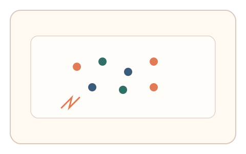
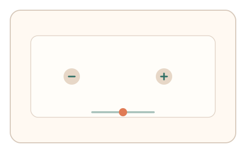
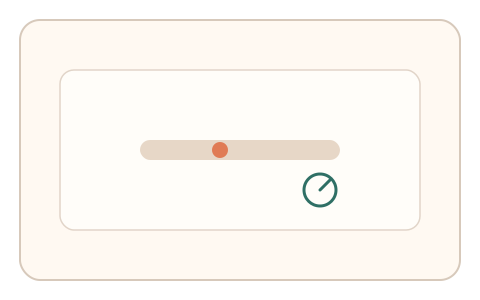

#129
D：单底座 × 单信号 × 自适应/短序列（视觉时域）
已扩展
瞬时容量阈值
闪现阵列中调整数量/曝光到刚能回忆，记录容量阈值与反应时。
概念原文
闪现阵列逐步增减数量/曝光，用户调整到“仍可瞬时回忆”的边界，记录容量阈值与反应时并与群体基线对比。
以瞬时视觉容量边界替代识别难度。
研究背景
视觉瞬时容量与图像记忆存在稳定上限，阈值与反应时的组合可表征个体差异。
核心机制
- 短时闪现物体阵列并立刻遮罩。
- 用户调节物体数量或曝光时长到“刚可回忆”。
- 记录容量阈值与回忆反应时。
- 与群体基线或历史记录比对。
用户流程
- 步骤 1：用户看到短暂闪现的物体阵列。
- 步骤 2：调整数量/时长到刚能回忆。
- 步骤 3：系统记录阈值与反应时。
判定信号
瞬时容量阈值
阈值反映视觉短时容量上限。
临界反应时与正确率
临界附近反应时与错率变化具有特征。
判定逻辑
阈值与反应时需落在人类范围；过高容量或零迟疑判异常。
对抗面
- 脚本读取 DOM/像素直接识别
- 重放历史答题序列
防御与缓解
- 随机化物体类型与位置
- 使用短时呈现后遮罩
- 引入干扰项与多轮一致性检查
可达性与风险
提供更大目标与较慢曝光选项。
- 展示过短导致挫败
- 工作记忆差异导致波动
可视化状态

状态 1：闪现阵列
短暂闪现多目标阵列。

状态 2：阈值调节
调整数量或曝光到刚可回忆。

状态 3：容量判定
记录容量阈值与反应时。
参考资料
Iconic memory
说明瞬时视觉记忆容量。
Visual working memory
说明视觉短时记忆容量限制。